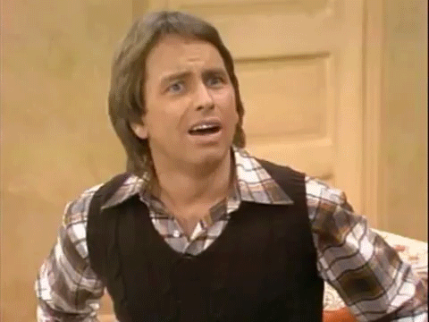
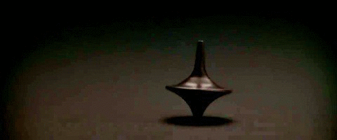

Administracion de Calidad Total
¿Que es la Administracion de Calidad Total?

La Calidad Total es una filosofía, una estrategia, un modelo de hacer negocios y está focalizada hacia el cliente.
Es un sistema de gestión empresarial íntimamente relacionado con el concepto de mejora continua y que incluye las fases de inspección y aseguramiento de la calidad.
Toma en cuenta todas las medidas de calidad en todos los niveles e involucra a todos los empleados.
ConceptoS De Calidad Total
Como Conformidad
Surge en el ámbito del taller y de la fábrica de manufactura y su mayor logro es el control estadístico de procesos que trata de eliminar el elevado costo de inspección masiva.
"Las empresas típicamente inspeccionan un producto cuando éste sale de la línea de producción o en etapas importantes del camino, y los productos defectuosos se desechan o se re elaboran. Una y otra práctica son innecesariamente costosas. En realidad la empresa le está pagando a los trabajadores para que hagan defectos y luego los corrijan. La calidad NO proviene de la inspección sino de la mejora del proceso"
-Edwards W. Deming
Como satisfacción de las expectativas del cliente
En este sentido un producto será de calidad cuando satisfaga o exceda las expectativas del cliente.

como valor con relacion al precio
Los autores que utilizan esta definición entienden que la noción de la calidad propugnan que tanto precio como calidad deben ser tenido en cuenta en un mercado competitivo.
Origen de la calidad total

Los japoneses iniciaron la aplicacion de esta tecnica, despues de la segunda guerra mundial su situacion era catastrofica por lo que optaron por adoptar sistemas de calidad para sus productos en el mercado intenacional
El resultado de estas medidas fueron un crecimiento espectacular por lo que esta iniciativa se expandio rapidamente alrededor del mundo imponiendose definitivamente en los años 80 por los europeos

Principales representantes
Philip B. Crosby
Philip Bayard "Phil" Crosby nació en Wheeling, Virginia, Estados Unidos de 1926 y falleció en Winter Park del año 2001, fue un empresario estadounidense, autor que contribuyó a la teoría gerencial y a las prácticas de la gestión de la calidad
Hacia finales de los 1970s y entrados los 1980s los empresarios norteamericanos estaban perdiendo mercados frente a los productos japoneses debido a la superioridad de estos últimos.
La respuesta de Crosby a la crisis de la calidad fue el Principio de "Hacerlo correctamente la primera vez" ("Doing it right the first time" DIRFT). También incluyó sus cuatro principios básicos:
- Calidad se define como cumplimiento de requisitos
- El sistema de calidad es prevención
- El estándar de realización es cero defectos
- La medida de la calidad es el precio del incumplimiento
William Edwards Deming
William Edwards Deming (14 de octubre de 1900 - 20 de diciembre de 1993) fue un estadístico estadounidense, profesor universitario, autor de textos, consultor y difusor del concepto de calidad total. Su nombre está asociado al desarrollo y crecimiento de Japón después de la Segunda Guerra Mundial. Su obra principal es Out of the Crisis (1986).
Los 14 puntos de deming
fueron la base para la modificación de la industria americana. La adopción y actuación sobre los 14 puntos es una señal de que la dirección tiene la intención de permanecer en el negocio y apunta a proteger a los inversores y los puestos de trabajo. Sirven en cualquier parte, tanto en las pequeñas compañías como en las más grandes, en las empresas de servicios y en las dedicadas a la fabricación.
Joseph Moses Juran
Joseph Moses Juran (Braila, Rumania, 24 de diciembre de 1904 - New York, 28 de febrero de 2008) fue un consultor de gestión del siglo 20 que es principalmente recordado como un experto de la calidad y la gestión de la calidad y la escritura de varios libros influyentes sobre esos temas.
Teoría de la gestión de calidad - Trilogia de Juran
Juran es ampliamente acreditado por la adición de la dimensión humana de la gestión de la calidad. Él impulsó la educación y la formación de directivos. Para Juran, las relaciones humanas son los problemas para aislar.
También desarrolló la "Trilogía de Juran," un enfoque de la gestión que se compone de tres procesos de gestión: la planificación, control de calidad y la mejora de la calidad.
Armand V. Feigenbaum
Armand Vallin Feigenbaum (Nueva York, Nueva York, 6 de abril de 1922 - Pittsfield, Massachusetts, 13 de noviembre de 2014) fue un empresario estadounidense y experto en control de calidad. Creó el concepto del Control Total de la Calidad, luego conocido como Administración de Calidad Total.
Escribió un libro con el nombre de Control total de calidad en los años 1940, en donde estableció que éste se logra cuando todas las áreas y personas de una institución trabajan hacia la calidad.
Feigenbaum fue quien acuñó el nombre de «Control de Calidad Total», viendo el enfoque sistémico (las partes y sus interrelaciones). Él sostenía que la calidad no solo es responsabilidad del departamento de producción, sino que requiere la implicación de toda la organización para poder lograrla e incluye actividades de calidad orientadas a los consumidores. Orientaba el control de la calidad total hacia la excelencia, antes que hacia los defectos. Feigenbaum afirmaba que el término “calidad” no significa “mejor” sino que consiste en ofrecer el mejor servicio y precio para los clientes.
Kaoru Ishikawa
Kaoru Ishikawa (13 de julio de 1915 - 16 de abril de 1989), fue un químico industrial japones, administrador de empresas y experto en el control de calidad, cuyo aporte fue la implementación de sistemas de calidad adecuados al valor de procesos empresariales
Se le considera el padre del análisis científico de las causas de problemas en procesos industriales, dando nombre al diagrama Ishikawa, cuyos gráficos agrupan por categorías todas las causas de los problemas.
Fue quien destacó las diferencias entre los estilos de calidad japoneses y occidentales, debido a sus diferencias culturales. Su hipótesis principal fue que aspectos como que su país consta de una sociedad vertical, además de no haber sido influenciados por el taylorismo, diferencias de escritura, educación y religión fueron claves en el éxito japonés en el control de calidad.
Las principales ideas de Ishikawa se encuentran en su libro ¿Qué es el control total de calidad?: la modalidad japonesa. En él indica que el Control Total de Calidad en Japón se caracteriza por la participación de todos, desde los más altos directivos hasta los empleados más bajos.